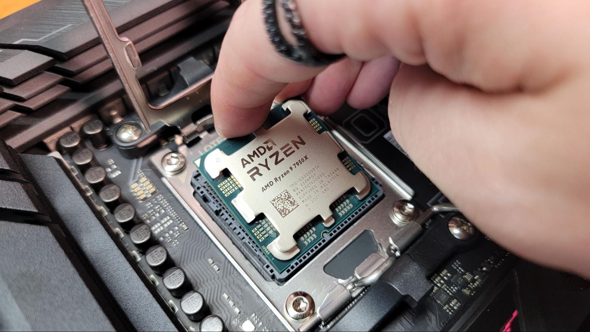
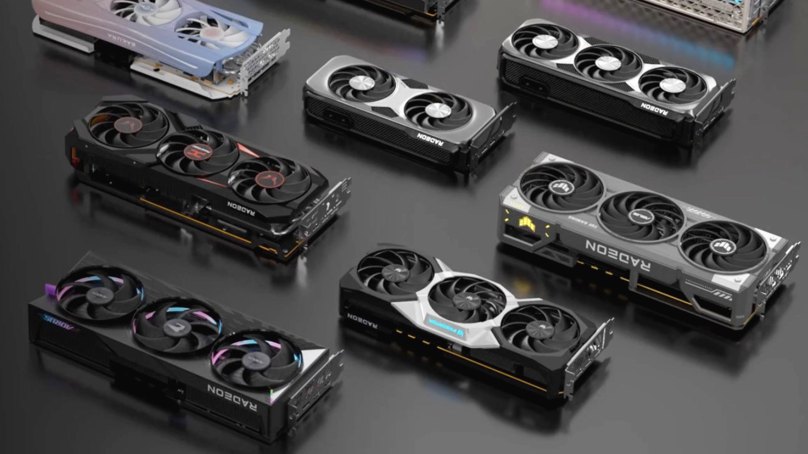
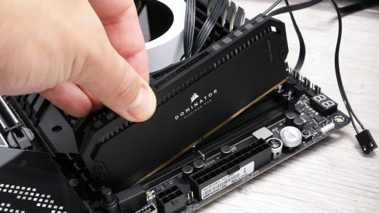
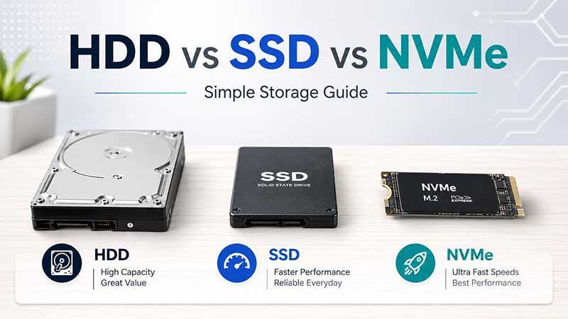
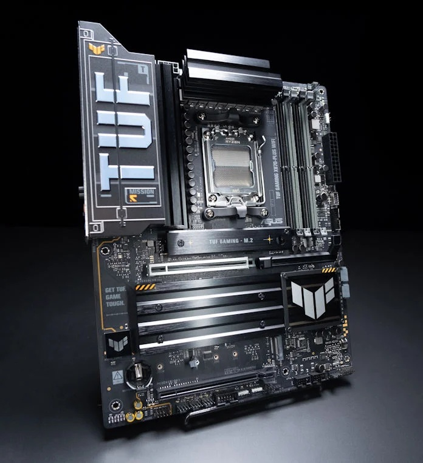
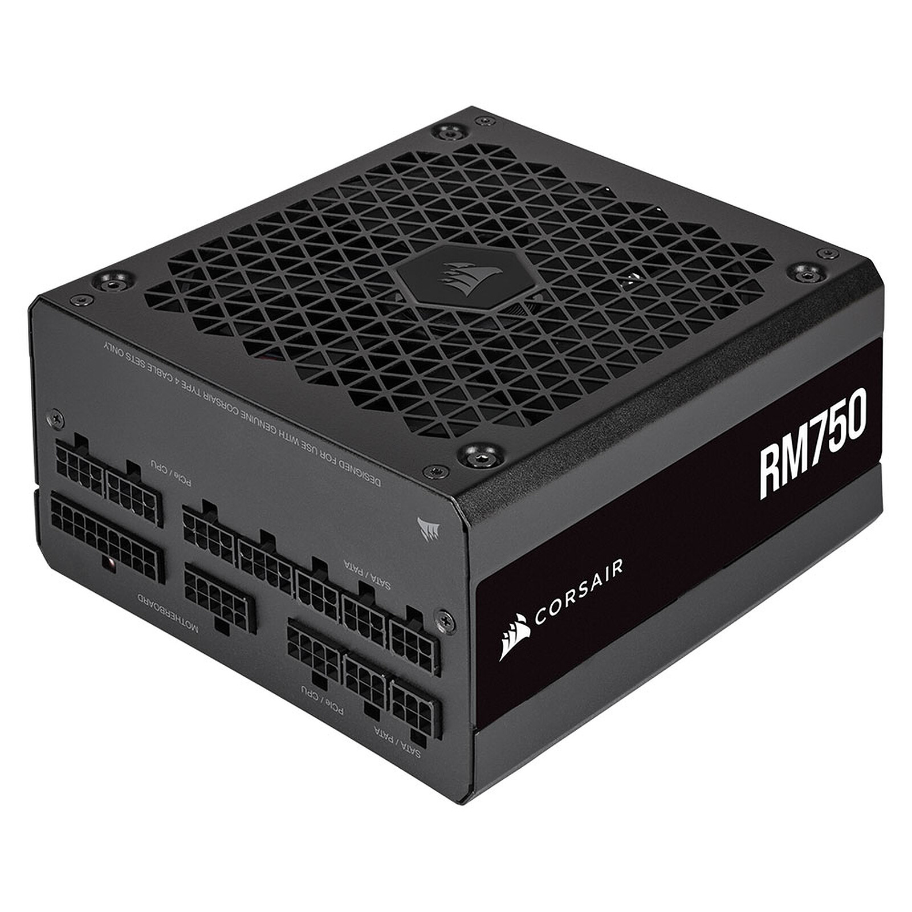

CPU (Processor)

The CPU processes instructions and performs calculations needed to run programs.
PC Diagnostics & Guides
Learn about the main components inside your computer and what each one does.

The CPU processes instructions and performs calculations needed to run programs.

The GPU handles graphics processing for games, videos, and other visual tasks.

RAM temporarily stores information that your computer is actively using.

Storage keeps your operating system, applications, and personal files.

The motherboard connects your computer's components and allows them to communicate.

The power supply converts electrical power into the voltages used by computer components.